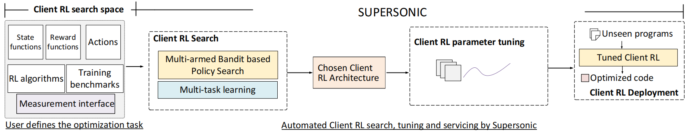

Getting Started¶
SuperSonic, a new open-source framework to allow compiler developers to integrate RL into compilers easily, regardless of their RL expertise. SuperSonic supports customizable RL architecture compositions to target a wide range of optimization tasks. A key feature of SuperSonic is the use of deep RL and multi-task learning techniques to develop a meta-optimizer to automatically find and tune the right RL architecture from training benchmarks. It uses the CompilerGym, OpenAI Gym, Ray interfaces to expose reinforcement learning.
Topics covered:
Key Concepts¶
Supersonic enables developers to express the optimization space. It automatically searches for the optimal RL policy, and provides an automated RL servicing environment.
The ingredients for reinforcement learning that SuperSonic provides are:
Task Definition:
The user-defined client RL search space typically includes candidate functions (or models) for representing the environment state, objective functions for computing the reward, and the set of possible actions that can be taken from a given state. This search space definition can optionally include a chosen set of RL exploration algorithms and transition functions to be used by a client RL algorithm. Furthermore, the compiler engineer also needs to provide a run function, which provides the measurement of an action to compute the reward.
Client RL search:
Given a client RL search space, the SuperSonic meta-optimizer automatically finds a suitable client RL architecture (i.e., <state function, transition function, reward function, RL algorithm> and potentially a value function) from training benchmarks using up to ùëõ trial runs.
Client RL Deployment:
SuperSonic provides APIs to load and reuse the stored objects to optimize any new program. To apply amtuned RL, SuperSonic creates a session to apply a standard RL loop to optimize the input program by using the chosen RL exploration algorithms to select an action for a given state. For example, the state could be a vector recording the last ùëõ compiler options added into the compiler flags or a DNN.
Our goal is to allow compiler developers to integrate RL into compilers easily, regardless of their RL expertise.
Installing SuperSonic¶
Checkout to install SuperSonic from source. Installing from source gives you the maximum flexibility to configure the build effectively from the official source releases. Install the latest CompilerGym release: See INSTALL.md for alternative installation methods.
If you would like to quickly try out SuperSonic or run some demo and tutorials, you can checkout install from Docker.